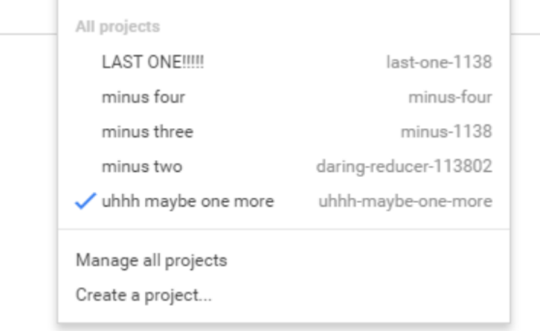
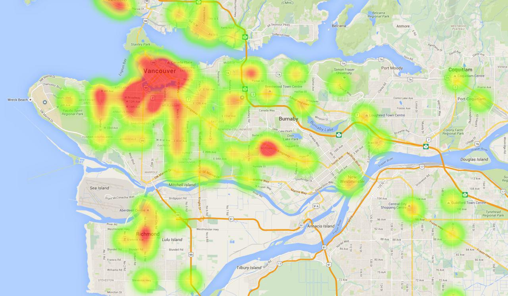
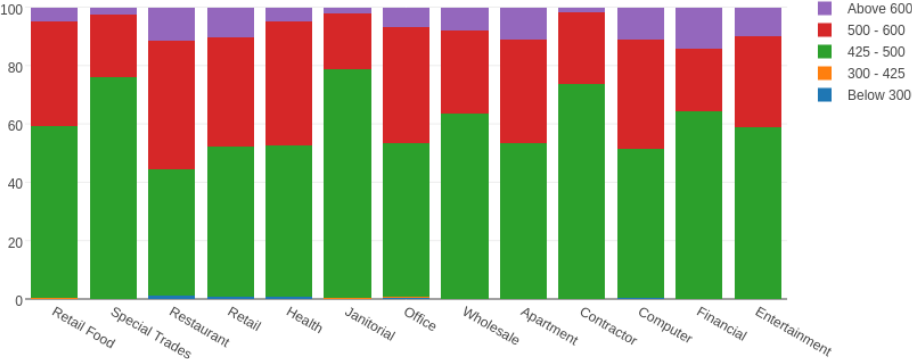
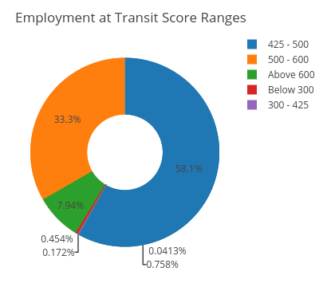
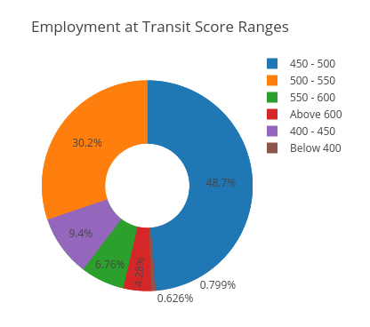
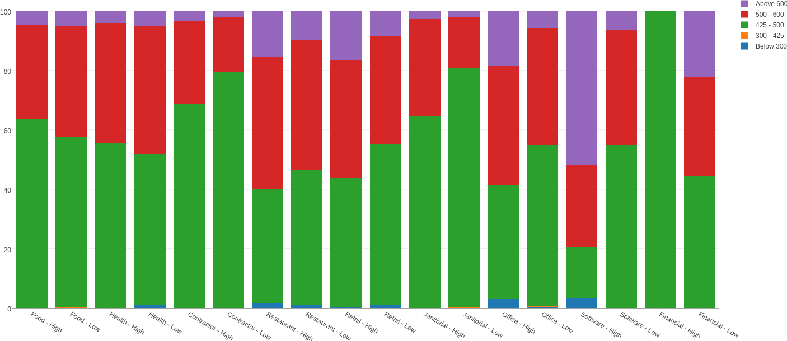

Public transit is annoying. I'm sure that at some point, we've all thought those words. Well to be fair, public transporation is a great idea; it's a cheap, easily accessible, quick and more environmentally friendly alternative to driving.
But after you're half an hour late for work because you just missed the one bus that goes to your destination, you can't help but think those words. And when you're stuck waiting 29 minutes (for a bus that comes every 30 minutes) five days a week, you really start to wonder...
Nobody can deny that the quality of public transit isn't evenly distributed accross Vancouver. On a good day, I can get from Rupert Station to UBC in about 45 minutes via the 99 B-Line, which is only 10-15 minutes slower than driving between the two locations.
On the other hand, to travel by transit between Rupert Station and my current Co-op (located near the southmost tip of Burnaby) takes FIVE TIMES LONGER than it would take to drive.
It also seems to happens that when I'm stuck waiting half an hour in the freezing cold for a bus, there's never a Tim Hortons or a pizza place nearby -- I always seem to be surrounded by offices or houses.
Yet when I'm getting on the SkyTrain or boarding a bus that comes every two minutes, there seems to be a plethora of places to choose from if I felt inclined to buy a coffee or grab a bite to eat.
These observations are part of what motivated the topic of our data analysis. We found proof to support our pre-existing beliefs and a few things that we hadn't though of.
Transit Quality
Sure I can convince most people that public transit is much worse in some locations than others with some time and a few Google Maps queries -- but it sure would be useful if I had some data to quantify my claims...
Unfortunately there was no existing dataset that conviently gave us an idea of transit quality -- but that didn't stop us. Instead we generated our own data using a creative approach and a few Google Maps queries (*cough* 20,000 *cough*).
We first chose 100 major intersections around Greater Vancouver that were fairly evenly spread and had approximately the same coverage as the Business Licenses dataset.
Our goal was to find the transit score for each of these intersections -- where transit score at a particular intersection, is defined as the average over the transit ratio between the intersection and every other intersection.
And transit ratio is defined to be the time it takes to travel between two locations by driving divided by the the time it takes to travel between the same two locations via transit.
As most people have probably already figured out, this O(n^2) algorithm requires us to make about 10,000 queries. However, the Google Maps Distance Matrix API returns the distance and the duration for every trip query, meaning it ended up being 20,000 queries.
Unfortunately for us, the Distance Matrix API has a usage limit of 2500 queries a day. Meaning we went through more than a couple API keys...
 The progression of project names as I was creating my last few API keys.
Once we eventually had the transit scores for a number of intersection, we made a weighted heatmap to gain a general idea of transit quality accross Greater Vancouver.
 Heat map of transit quality. Metrotown and Downtown have the strongest transit scores, quite unsurprinsgly.
Now that we have some data to support our claims about the quality of public transit in different areas of Greater Vancouver, we can start analyzing the Business Licenses dataset to determine what the transit quality at a location says about the businesses that exist there.
Below is a rough unoptimized, pseudo-coded version of how transit score is calculated -- in case my written explanation is confusing.
def transit_ratio(from, to):
return time_by_bus(from, to)/time_by_car(from, to)
def transit_score(intersection, all_intersections):
scores = [transit_ratio(i, intersection) for i in all_intersections]
return sum(scores)/len(scores)
def get_traffic_scores(all_intersections)
scores = {}
for i in all_intersections:
scores[i] = traffic_score(i, all_intersections)
return scores
Business Types and Transit Quality
We were curious about whether the quality of the transit at a particular location gave any indication about the type of business that was exist there.
So what we did was identify the nearest intersection for every single business and setting the transit score of the business to be the score at the nearest intersection.
Now, we have a mapping between businesses and transit scores. After cleaning this data a bit (because there seemed to be a huge number of duplicate licenses for a few businesses), we had the data that we used for the rest of our analysis.
The largest transit score was 693.8885. The lowest transit score was 317.1743. The median transit score was 496.2396.
The first quartile was at 469.7478, which shows that most of the businesses between the first quartile and median have similar transit scores. The third quartile is 532.9249.
The average transit score is 504.2753. The standard deviations of transit scores for businesses is 53.0564.
Notice that the mean the median, which tells us the the distribution is skewed to the right. This means that the transit scores are bunched up towards the left with a tail that stretches far into the right.
The skew suggests that there are a lot of businesses that are at a decent transit score but significantly fewer at higher transit scores.
We created a graph of the transit score ranges that different types of businesses tend to exist at.
 Stacked bar graph visualization of the transit score ranges different types of businesses tend to exist at.Businesses with a transit score above 600 are exceptionally easy to travel to by transit. On the other hand the very few businesses below 400 are somewhat more difficult to travel to.
From the stacked bar graph we can see that almost 60% of restaurants have transit scores above 425, while around 75%-80% of Janitorial/Contracting businesss tend to have transit scores less than 425.
This graph supports our pre-existing belief that consumer-oriented businesses tend to exist at high transit locations.
Restaurants, retail businesses and even health services tend to rely on customers being able to visit them in person -- meaning that they tend to exist at high transit locations. On the other hand, janitorial services and contracting businesses are more likely to book appointments over the phone and tend to rely a lot less on people happening to walk by their location.
Employees and Transit Quality
It was around this point in our analysis that I became curious of the transit score of the place I currently work (low 400s) and I started wondering how many other people were in a similar situation as me.
Below is a pie chart indicating the number of employees at varying transit score ranges in Vancouver.
 Pie chart indicating the number of employees at varying transit score ranges.It really does look like most people are in a better transit situation than I am, but it'd be easier to tell if we adjusted the ranges a bit.
 Pie chart indicating the number of employees at revised transit score ranges.It really does look like most people work in the 450 - 500 range, though as the transit score increases the number of employees seems to decrease. To give an idea of what the 450 - 500 range entails, most of Downtown is above 550, while places like Brentwood Town Centre fall in the 475 - 500 range.
This made us wonder about what the size of a business said about its transit score, which is what motivated our next analysis.
Business Size and Transit Quality
This question is probably the one with the most interesting answers out of our entire analysis. We wanted to gain an understanding of how the number of employees correlates with the transit score of a business.
What we did was place every business into one of two categories: either it has a below average number of employees for its business type or it has an above average number of employees.
After splitting the set of businesses for every type into these categories -- we redrew the stacked bar graph that we drew earlier. And observed some interesting results.
 Size and type as an indicator of the transit score of a business.I find this to be an extremely interesting graph, just because of how many different explanations there are for the results. This graph really caused us to think about what size and transit score said about a business and how the two attributes might be related.
Property costs tend to be higher at locations that are more accessible by transit -- meaning that businesses that open up at high transit score locations are going to have less room and thus less employees.
This is our explanation for why food retail places (ie. grocery stores) and health services place appear to have high transit score locations correlate with a lower number of employees.
Furthermore, businesses that are more established will have a larger number of employees while still being outside of areas easily accessible by transit. This seems to be particularly true for businesses in the financial sector.
Once a business grows enough to have a certain number of employees, it's likely to move into a larger office which is more likely to be in an area with less expensive property costs. And areas with less expensive property costs tend to be in low transit score areas.
On the other hand, a lot of the consumer based businesses have high numbers of employees associated with large transit scores. This could be because businesses at high transit areas are more likely to grow -- thereby leading to an increased number of employees.
In addition to growth, businesses in high transit areas are more likely to be open for longer to satisfy people passing by at all times of the day, thus needing employees for multiple shifts.
With so many people passing by, businesses in high transit locations are more likely to be extremely busy at peak hours which would lead to having to hire a larger number of employees.
It's really interesting to guess at possible explanations for the effect of transit availability on the size of businesses -- but the only way to know for sure, would be with more data.
Potential Further Investigations
There's a lot more analysis left to do with regards to the effect of transit on businesses. I've listed a few things that we might be investigating in the near future.
It'd be interesting to investigate established businesses seperately from small businesses. Are smaller businesses more likely to exist at high transit locations? Or do big chain stores the only ones that can afford the higher property costs?
If we had a suitable amount of data on the earnings of businesses, it'd be interesting to identify how much businesses at high transit locations benefit from having a greater number of by-passers. We could even identify the optimal places in Vancouver to open a small business, by optimizing the location based on the net gain of every business minus the property cost.
If we analyzed the bus arrival times provided by TransLink, we could identify where people were waiting for busses more often. This data might have a stronger correlation with business success than simply computing transit scores as someone would be more likely to buy a slice of pizza from a place accross a bus stop if they knew they'd be waiting for twenty minutes.